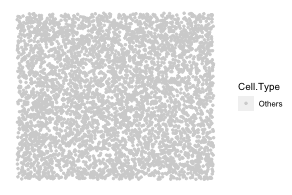
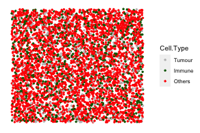

The goal of spaSim (spatial Simulator) is to facilitate tissue image simulations! It simulates cells with 2D locations (point data) and cell types in a tissue. The available patterns include background cells, cell clusters, immune cell rings and vessels. It also enables simulations that generate a set of images in one run!
As quantitative tools for spatial tissue image analysis have been developed and need benchmarking, simulations from spaSim can be applied to test and benchmark these tools and metrics. The output of spaSim are images in SpatialExperiment object format and can be used with SPIAT. SPIAT (Spatial Image Analysis of Tissues) is also developed by our team.
To install this package, start R and enter:
if (!require("BiocManager", quietly = TRUE))
install.packages("BiocManager")
BiocManager::install("spaSim")You can install the development version of spaSim like so:
install.packages("devtools")
devtools::install_github("TrigosTeam/spaSim")The vignette with an overview of the package can be accessed from the top Menu under Articles or clicking here.
This is a basic example which shows how to simulate background cells with multiple cell types of different proportions.
library(spaSim)
set.seed(610)
mix_background <- TIS(n_cells = 5000, width = 2000, height = 2000,
bg_method = "Hardcore", min_d = 10,
names_of_bg_cells = c("Tumour","Immune","Others"),
proportions_of_bg_cells = c(0.1, 0.2, 0.7),
plot_image = TRUE)